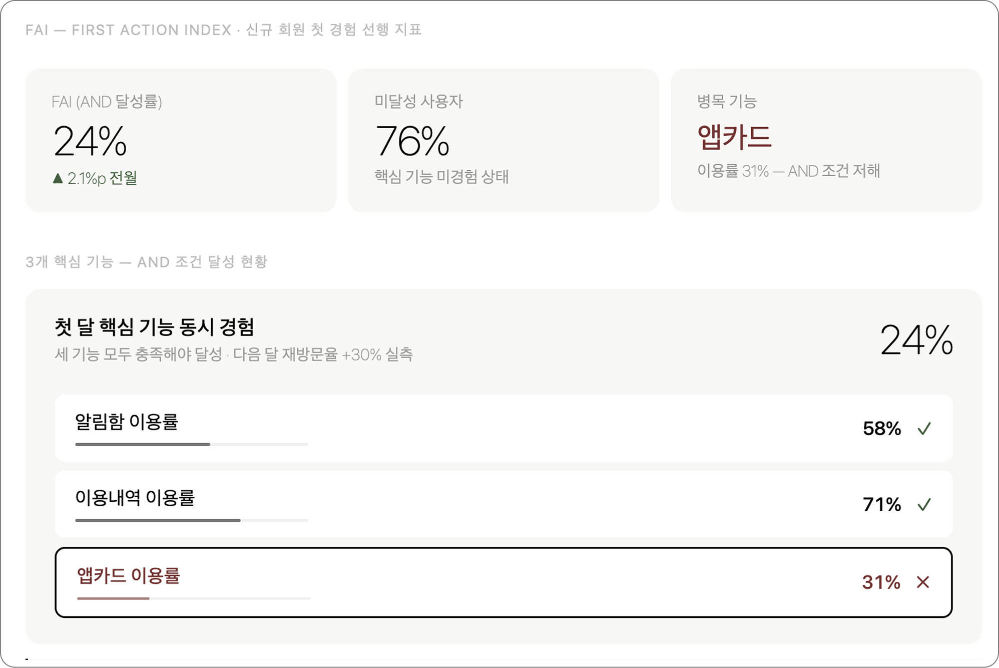
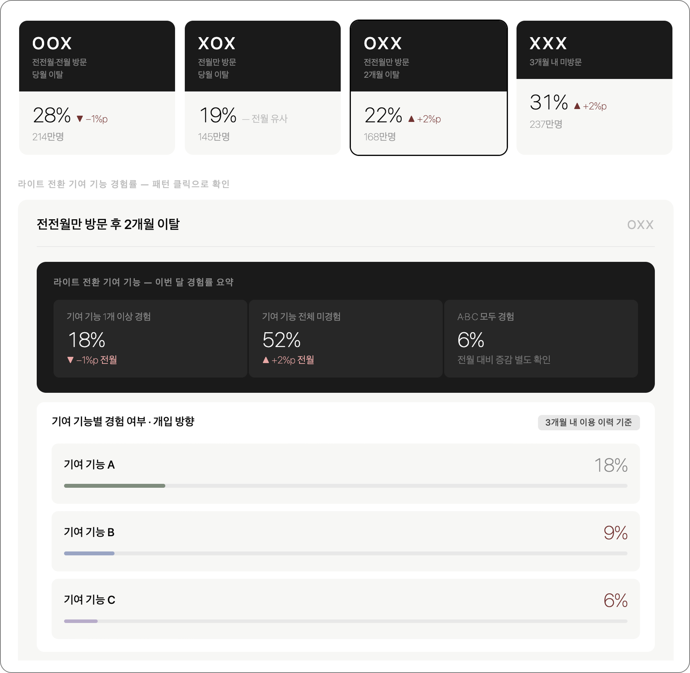
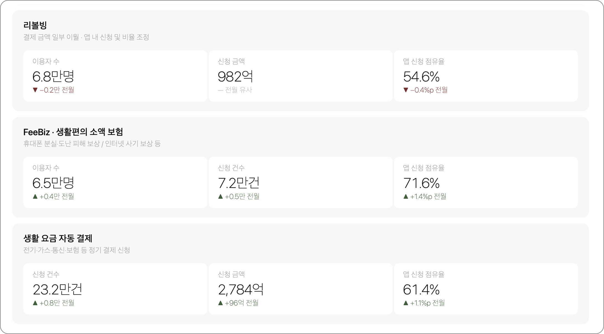
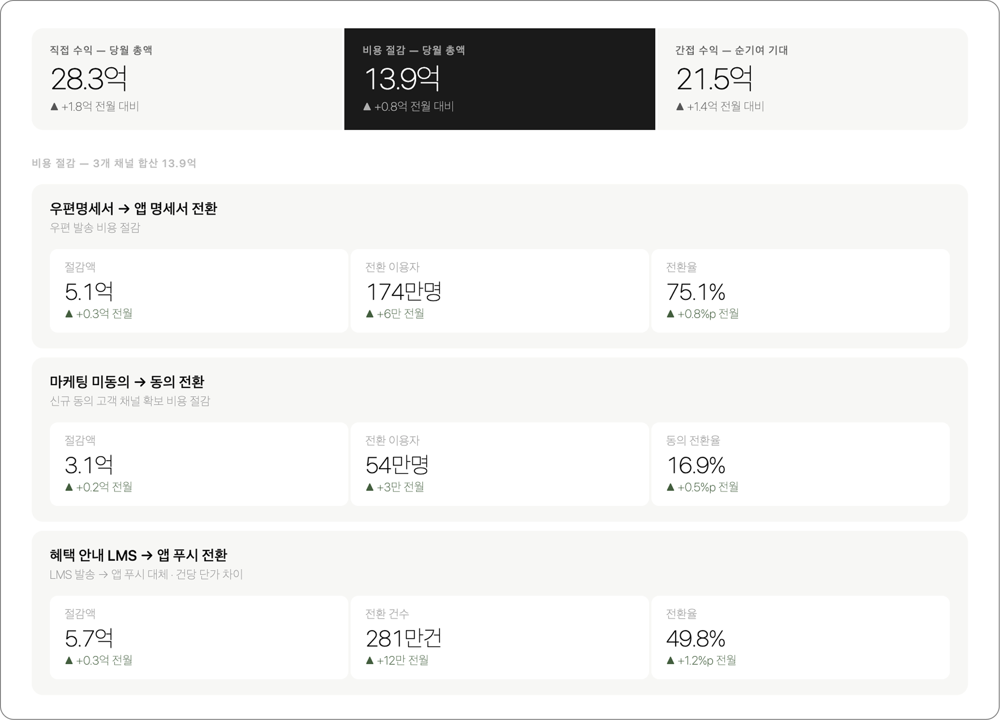

정밀 타격 대시보드 및
카드앱의 세이버 메트릭스 제안
UX Insight팀
2026. 4. 28
세그별 명칭 정의
ACQUISITION TRACK
| 미설치자 | 장기 미이용자 | 간헐 이용자 |
|---|---|---|
| No Show | Long-D | On-Off |
| Newbie | Long-Lost | Nomad |
| Cold | Churn | Float |
| Hiding | Missing | Wandering |
RETENTION TRACK
| Light | Casual | Power |
|---|
대시보드 V.08
정교한 세그멘테이션 기반
사용자 현황 파악 및 이상 징후 조기 감지
세그별 사용자 수
및 전월 동기 대비 증감
세그별 사용자 속성
(보유 카드, 연령, 결제 횟수)
Retention 트랙 사용자
로그인 일수 전월 동기 비교
현상 파악을 위한 대시보드를 빠르게 구축
단, 데이터 해석 및 활성화 방안은 바이위클리 단위, UXI팀 주도로 공유
단, 데이터 해석 및 활성화 방안은 바이위클리 단위, UXI팀 주도로 공유
대시보드 V.08 > 세그별 현황
- Retention 트랙 3개 세그의 당월 누적 로그인 일수를 전월 동일 주차와 주별 비교 (세그는 전월 마감 기준)
- 평균 로그인 일수 감소 시 이탈 징후로 판단, 집중 관리 대상 조기 식별 (평일/휴일 수 차이 병기)

대시보드 V.08 > 이탈 조기 경보
- Retention 트랙 3개 세그의 당월 누적 로그인 일수를 전월 동일 주차와 주별 비교 (세그는 전월 마감 기준)
- 평균 로그인 일수 감소 시 이탈 징후로 판단, 집중 관리 대상 조기 식별 (평일/휴일 수 차이 병기)

카드앱의 세이버 메트릭스 제안
야구가 세이버 메트릭스를 통해 선수의 기여를 재정의 했듯
카드앱도 앱의 질적 성장을 이끄는 기여 요인을 재정의
카드앱도 앱의 질적 성장을 이끄는 기여 요인을 재정의
⚾야구
타율, 평균자책점
→
OPS, WHIP, WAR, WPA
💳카드앱
MAU, 이용률
→
FAI, RDI, VRI
카드앱의 세이버 메트릭스 제안
사용자 라이프 사이클을 관통하는 지표 체계
신규 사용자
정기 사용자
습관적 사용자
FAIFirst Action Index
신규 회원이 다음 달에도
돌아오게 하기 위한 목적
돌아오게 하기 위한 목적
처음 앱을 사용하는 사람이
재방문 기여 기능을 경험했는가
재방문 기여 기능을 경험했는가
RDIRevisit Driver Index
이번 달 방문자가 다음 달에도
돌아오게 하기 위한 목적
돌아오게 하기 위한 목적
재방문률에 기여하는 기능을
얼마나 잘 사용하고 있는가
얼마나 잘 사용하고 있는가
VRIVisit Regularity Index
습관화 완성으로
이탈을 방지하기 위한 목적
이탈을 방지하기 위한 목적
3개월 연속 방문으로
앱 방문이 습관화 되어 있는가
앱 방문이 습관화 되어 있는가
FAI (First Action Index)
- 신규 회원 대상, '재방문 기여 기능(온보딩 기능)'을 정의하고 충족 여부를 측정
- 다음 달 재방문 및 세그 전환 가능성을 진단하는 선행 지표로 활용
FAI = 온보딩 달성자 수 / 신규 회원 수*100
온보딩 달성자 수 = 재방문 기여 기능 이용 완료 시 '1'로 취급 (미이용 시 '0')
신규 회원 수 = 당월 앱 가입자 수
FAI (First Action Index)
- '24.9월 발행된 리텐션 데이터 인사이트 리포트 내 '재방문 기여 기능' 참고
- 신규 회원 대상 재방문 기여 기능은 26년 기준 현행화 필요
'24.9월 Retention Data Insight Report > 재방문 기여 기능
신규 회원
- 알림함, 최근이용내역, 앱카드
- 세 개가 AND 조건일 때, 미 이용자 대비 다음달 재방문률이 30프로 높아짐
측정 방식
- 온보딩 달성 조건 : 알림함 AND 이용내역 AND 앱카드 이용
- 세 개 모두 충족 = 1 / 하나라도 빠지면 '0'
FAI (First Action Index)
- 월간 기준 신규 회원의 FAI 달성률 및 미달성자 비율 트레킹
- 미달성 영역 확인 + 기능 이용 유도를 위한 실행 과제로 연결

ex) 신규 회원의 FAI 및 병목 기능 정보
RDI (Revisit Driver Index)
- 기존 회원 대상, '재방문 기여 기능'을 정의하고 각 세그별 충족 여부를 측정
- 다음 달 재방문 및 세그 전환 가능성을 진단하는 선행 지표로 활용
RDI = 달성자 수 / 이용자 수*100
달성자 수 = 재방문 기여 기능 이용 완료 시 '1'로 취급 (미이용 시 '0')
이용자 수 = 각 세그별 이용자수
RDI (Revisit Driver Index)
- '24.9월 발행된 리텐션 데이터 인사이트 리포트 내 '재방문 기여 기능' 참고
- 명세서, 최근이용내역 등 주요 레거시 서비스 업데이트로 '재방문 기여 기능' 현행화 필요
'24.9월 Retention Data Insight Report > 재방문 기여 기능
기존 회원 재방문 기여 기능
- 명세서, 알림함, 소비캘린더 중 하나라도 이용하는 경우, 3개월 연속 앱 이용률이 미 이용자 대비 15-16% 상승
혜택 관련 재방문 기여 기능
- 혜택 열람, 받기, 신청, 받은 선물 열람, 실적 충족 확인, CT 더보기 등
- 위 기능 중 하나라도 이용하는 경우, 미 이용자 대비 3개월 연속 앱 이용률이 10% 이상 상승
RDI (Revisit Driver Index)
- 루틴 RDI : 명세서, 알림함, 소비캘린더, 3개 기능 포함, 카드앱 방문 습관화 기여 기능에 대한 이용률
- 혜택 RDI : 혜택 열람, 받기, 신청 및 실적 확인 등 혜택 중심의 탐색/관리/활용 기능에 대한 이용률
루틴 RDI
루틴 달성 조건
: 명세서 OR 알림함 OR 소비캘린더 이용
세 개 중 하나로도 충족 시 =1
모두 미충족시 = 0
세 개 중 하나로도 충족 시 =1
모두 미충족시 = 0
루틴 RDI = 달성자 수 / 해당 세그 전체 * 100
혜택 RDI
혜택 달성 조건
: 혜택 열람 OR 받기 OR 신청 OR
받은 선물 OR 실적확인 OR CT 더보기
하나로도 충족 시 =1
모두 미충족시 = 0
받은 선물 OR 실적확인 OR CT 더보기
하나로도 충족 시 =1
모두 미충족시 = 0
혜택 RDI = 달성자 수 / 해당 세그 전체 * 100
RDI (Revisit Driver Index)
- 전월 대비 RDI 달성률 및 미달성자 비율 트레킹
- 세그별 미달성 영역 확인 + 기능 이용 유도를 위한 실행 과제로 연결

ex) 라이트/캐쥬얼/파워 유저별 루틴/혜택 RDI 및 병목 기능 정보
VRI (Visit Recurrence Index)
- 3개월 연속 사용 여부를 트레킹하여, 앱 방문 습관화 여부를 측정
- 연속 사용 미달성 현황을 감지, RDI (Revisit Driver Index)와 함께 모니터링하여 연속 방문 루틴을 만드는 것이 목표
VRI = 3개월 연속 사용자 수 / 전체 사용자 수*100
세그별 방문률 집계 및 미달성자 이용 패턴 동시 트레킹
VRI (Visit Recurrence Index)
- 3개월 연속 이용 미달자의 이용 패턴을 동시 트레킹하여, 패턴별 문제 진단
- 이탈 위험이 높은 그룹에 대해 재방문 기여 기능 이용 현황 교차 점검
OOO
3개월 연속 방문으로
습관화 완성
습관화 완성
유지 관리 그룹
XOO
2개월 연속 방문
습관화 진행 또는 이탈 후 회복
습관화 진행 또는 이탈 후 회복
다음달 방문 유도 필수
RDI*점검 필요
RDI*점검 필요
OXO
격월 방문
방문 루틴이 미형성
방문 루틴이 미형성
위험 그룹으로 개입 필요
RDI* 점검 필요
RDI* 점검 필요
XXO
당월만 방문
신규 / 장기 미사용자유입
신규 / 장기 미사용자유입
다음 달 방문 유도 필수
FAI* 점검 필요
FAI* 점검 필요
*RDI (Revisit Driver Index) : 기존 회원 기준, 재방문 기여 기능 이용률
*FAI (First Action Indx) : 신규 회원 기준, 재방문 기여 기능 이용률
*FAI (First Action Indx) : 신규 회원 기준, 재방문 기여 기능 이용률
VRI (Visit Recurrence Index)


LPI (Lapse Pattern Index) 논의 필요
- 간헐 사용자가 다음 달 앱을 방문하게 하기 위한 목적
- '라이트 유저 전환 기여 기능'을 정의하고, 간헐 이용자 대상으로 기능 이용 달성 여부를 측정
LRI = 기여 기능 이용자 수 / 간헐 이용자 수*100
기여 기능 이용자 수 = 재방문 기여 기능 이용 완료 시 '1'로 취급 (미이용 시 '0')
간헐 이용자 = 앱 경험자 중 MAU 미포함 회원 (최근 3개월 이용 기록 기준)
LPI (Lapse Pattern Index) 논의 필요
- 가설을 기준으로 지표를 정의, 라이트 유저 전환 기능 정의를 위한 데이터 분석 필요
라이트 유저 전환 기여 기능 정의
개월 연속 라이트 유저 유지 대상 기준
연속 이용 기능 도출
연속 이용 기능 도출
간헐 이용자 이용 기능과 비교
↓
↓
라이트 유저만 이용하는 기능
= 라이트 유저 전환 기능
= 라이트 유저 전환 기능
측정 방식
세그 전환 기여 기능 이용 여부를
AND, OR 조건 모두 측정
→ 병목 기능 트레킹
AND, OR 조건 모두 측정
→ 병목 기능 트레킹
LPI (Lapse Pattern Index) 논의 필요
- 간헐 이용자의 이탈 패턴을 동시 트레킹 하여 패턴별 문제 진단
- 이탈 위험이 높은 그룹에 대해 라이트 전환 기여 기능 이용 현황 교차 점검
OOX
연속 방문 후 당월 이탈
이탈 초기로
재유입 가능성 높음
재유입 가능성 높음
XOX
전월만 방문, 당월 이탈
단발 방문 패턴으로
루틴 미형성
루틴 미형성
OXX
2개월 연속 미방문
이탈 진행 중
위험 그룹으로 즉시 개입 필요
위험 그룹으로 즉시 개입 필요
XXX
3개월 연속 미방문
이탈 장기화
기존의 개입 방식 전환 필요
기존의 개입 방식 전환 필요
LPI (Lapse Pattern Index) 논의 필요


+ BA (Business Attribution)
- 앱의 비즈니스 기여도를 정량화하여 트레킹 할 수 있는 지표
- 직접 수익 / 비용 절감 / 간접 수익으로 구분하여 이용자 수 및 비용 가시화
직접 수익
앱 이용으로 발생한
신규/증분 수익
신규/증분 수익
주요 항목
- CA, CL, 리볼빙
- FeeBiz
- 생활요금 자동 결제
비용 절감
디지털 전환으로
절감한 OPEX
절감한 OPEX
주요 항목
- 우편명세서 → 앱명세서 전환
- 마케팅 미동의 → 동의 전환
- 혜택 LMS → 앱 푸시 전환
간접 수익
앱 이용 및 세그 전환에
따른 기대 수익
따른 기대 수익
주요 항목
- 앱 미이용 → 앱 이용
- Light → Casual 전환
- Casual → Power 전환
+ BA (Business Attribution) > 직접 수익


ex.1) 직접 수익 기여액 : 항목별 이용자 수, 신청 금액 합산, 앱 신청 점유율 및 전월 대비 증감 정보 제공
+ BA (Business Attribution) > 비용 절감

ex.2) 비용 절감 기여액 : 항목별 이용자 수, 절감액 합산, 전환율 현황 및 전월 대비 증감 정보 제공
- 우편명세서 → 앱 명세서 전환 OPEX 절감액 (1년) : 6,152원
- 마케팅 미동의 → 동의 전환 OPEX 절감액 (1년) : 6,152원
- 혜택 알림 LMS → Push 전환 OPEX 절감액 (1년) : 1,633원
+ BA (Business Attribution) > 간접 수익

ex.3) 앱 이용에 따른 기대 수익 : 신규 가입 및 세그 전환에 따른 인당 기대 수익 현황
- 앱 미이용 → 이용 기대 신판 수익 (1년) : 8,357원
- [갱신 필요] Lite → Casual 전환 시 기대 수익 : 1,703원 (1회)
- [갱신 필요] Casual → Power 전환 시 기대 수익 : 2,266원 (1회)
대시보드 구축 계획
| v 0.8 (전체 공유용) | v 0.9 (전체 공유용) | v 1.0 (전체 공유 + 내부 확인용) | |
|---|---|---|---|
| 일정 | 5월 목표 | 7월 목표 | 9월 목표 |
| 구축 형태 | HTML 파일(데이터 수동 업데이트) | 좌동 | 데이터 자동 업데이트 목표전체용 : MIS(업무망) Vs. SALAD(관리망) 내부용 : SALAD(관리망) |
| 주요 정보 | 주 단위
|
(+) 월 단위
|
(+) 월 단위내부 확인용 : 세이버 매트릭스 (FAI, RDI, VRI) |
| 장점 | 데이터 파트 운영 리소스 최소화빠르게 데이터 시각화 가능 | 좌동 | UXI 운영 리소스 최소화대시보드 접근성 향상 |
| 단점 | 매주 수동으로 데이터 업데이트 및본부 내 수기 전파 필요 | 좌동 | 대시보드 구축 환경에 따른 개발 리소스 상이데이터 파트의 운영/관리 리소스 커짐 |
EOD